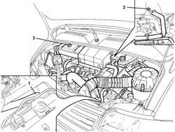

0010T20 COOLANT CHECK DENSITY AND TOP UP IF NECESSARY
- Path
- Procedures > 00 MAINTENANCE > 0010 NEW UNITS AND PLANNED MAINTENANCE > 0010T VEHICLE OIL AND FLUIDS > 0010T20 COOLANT CHECK DENSITY AND TOP UP IF NECESSARY
- Kind
- repair procedure (removal / refitting; the operation number is the code)
- Applies to
- all engines; all production periods
- Interactive page
- https://sloeber94.github.io/elrnDB-fDct/en/#/244000602
Applies to: all engines; all production periods
- Instructions for draining the system.
- Position the vehicle on the lift.
- Raise the lift.
Op. 7055B54 UNDER-ENGINE GUARD - R R
- Remove the engine coolant reservoir cap.
- Position a suitable container for collecting the fluid under the vehicle.
- Remove the band from the lower radiator hose and release the hose from the connector on the radiator.
- Open the bleed screw on the radiator outlet hose completely.
- Instructions for refilling the system.
- Turn the passenger compartment heater control knob to the MAX heat position (tap open).
1. Reconnect the lower radiator hose and secure it using the band.
- Slowly introduce coolant via the filler located on the expansion tank until it comes out of the bleed screw on the radiator outlet hose.
2. Then close the bleed screw.
- Continue refilling until the coolant in the tank is at the MAX level.
3. Tighten the engine coolant reservoir cap.

Applies to: all engines; all production periods
- Start up the engine and let it idle for about 2 minutes.
Applies to: all engines; all production periods
- For vehicles with air conditioning, make sure that the climate control is switched off, in other words in the OFF position.
Applies to: all engines; all production periods
- Then carry out gradual, periodic (every 30 secs.) acceleration until the engine speed is around 3000 rpm.
- This operation should be carried out until the radiator fan cuts in/switches off at least twice.
- Then switch off the engine and leave it to cool down.
- After having left the engine to cool down, top up the fluid to the MAX level in the tank if necessary. At the end of this operation, make sure that at least the same amount of fluid that was collected when the system was drained has been introduced.
- If there is any fluid left over, then the circuit needs to be bled further.
Applies to: engines: 2.0 16V; all production periods
 | Description | Qty. | Component | Type | Classification |
|---|---|---|---|---|---|
. | PARAFLU 11 | 10 Litri | ENGINE COOLING CIRCUIT | Fluid | - |
Applies to: engines: 2.0 JTD 8V; all production periods
| Description | Qty. | Component | Type | Classification |
|---|---|---|---|---|---|
. | PARAFLU 11 | 10,5 Litri | ENGINE COOLING CIRCUIT | Fluid | - |
Applies to: engines: 2.3 JTD 16V; all production periods
| Description | Qty. | Component | Type | Classification |
|---|---|---|---|---|---|
. | PARAFLU 11 | 12 Litri | ENGINE COOLING CIRCUIT | Fluid | - |
Applies to: engines: 2.8 JTD 8V; all production periods
| Description | Qty. | Component | Type | Classification |
|---|---|---|---|---|---|
. | PARAFLU 11 | 12 Litri | ENGINE COOLING CIRCUIT | Fluid | - |
Op. 7055B54 UNDER-ENGINE GUARD - R R
- Lower the lift.
- Remove the vehicle from the lift.
Topics linked from this page (1)
Topics that link to this page (44)
- 1004B10 POWER UNIT WITH MANUAL GEARBOX - R + R
- 1004B12 POWER UNIT WITH MANUAL GEARBOX - R+R FOR VERSIONS WITH A/C
- 1016C10 SINGLE CYLINDER HEAD, REMOVED - OVERHAUL
- 1016C11 SINGLE CYLINDER HEAD-R R GASKET FOR VERSIONS WITH AIR CONDITIONER
- 1028H10 PISTON WITH CONNECTING ROD - R R
- 1028H11 PISTON CONNECTING ROD SET - R R
- 1060E40 SUPPLEMENTARY PRESSURE PUMP - R R
- 1072B11 INTAKE MANIFOLD - R R AND REPLACE GASKET FOR VERSIONS WITH AIR CONDITIONER
- 1084C10 STAFFA DI SUPPORTO DEL RADIATORE RAFFREDDAMENTO OLIO MOTORE - R.R.
- 1088B20 ENGINE COOLING RADIATOR - R + R
- 1088B24 ENGINE COOLING RADIATOR - R R FOR AIR CONDITIONED VERSIONS
- 1088C10 WATER PUMP - R + R
- 1088C30 THERMOSTAT UNIT - R+R
- 1088C40 THERMOSTAT- R + R
- 1088D10 LOWER SLEEVE FOR COOLANT OUTLET FROM RADIATOR - R + R
- 1088D14 UPPER SLEEVE FOR COOLANT INLET TO RADIATOR - R + R
- 1088D16 RIGID PIPE BETWEEN RADIATOR HOSES AND THERMOSTAT - R.R.
- 1088D18 HOSE BETWEEN RIGID PIPE AND THERMOSTAT - R.R.
- 1088D24 RIGID PIPE FOR COOLANT INLET TO WATER PUMP - R + R
- 1088D26 RIGID INTAKE PIPE TO WATER PUMP - R+R FOR VERSIONS WITH A/C
- 1088D47 OIL EXCHANGE SLEEVE - R R
- 1088D51 COOLANT SUPPLY PIPE FROM CRANKCASE TO OIL/WATER HEAT EXCHANGER - R.R. WITH REAR ENGINE SUPPORT REMOVED
- 3330D12 BRAKE SERVO - R R FOR RIGHT HAND DRIVE VERSIONS - INCLUDES SEPARATION FROM MASTER CYLINDER(PUMP)
- 5020A10 HEATER BOX - R+R
- 5020A12 HEATER CASING - R+R WITH FACIA REMOVED
- 5020A72 AIR INTAKE AND RECIRCULATION FLAP FAN/FLAP, L.H. OR R.H.-DISMANTLE AND REBUILD
- 5020M10 INDEPENDENT HEATER UNIT - R R
- 5020M50 ADDITIONAL INDEPENDENT HEATER WATER SUPPLY AND RETURN PIPES - R.R.
- 5020M80 WATER PUMP FOR ADDITIONAL HETAER UNIT - R.R.
- 5020M84 WIRING ON ADDITIONAL HEATER - R.R.
- 5020M86 FAN FOR ADDITIONAL HEATER UNIT - R.R.
- 5020M92 WIRING ON ADDITIONAL HEATER - R.R.
- 5040A80 EXPANSION/CONNECTION PIPE - R R
- 5040B22 AIR CONDITIONING SYSTEM DE-MISTER THERMOSTAT - R+R
- 5040B30 EXPANSION VALVE (TUBE ORIFICE) - R+R
- 5040C10 AIR CONDITIONER CONTROL SUPPORT - R+R
- 5040C12 AIR CONDITIONER HOUSING - R R WITH FACIA DISCONNECTED
- 5040C30 FAN MOTOR - R+R
- 5040C50 AIR CONDITIONER HEATER RADIATOR - R+R
- 5040C56 CONNECTING PIPE BETWEEN TAP AND AIR CONDITIONING HEATER RADIATOR - R.R.
- 5040C58 AIR CONDITIONING HEATER RADIATOR TAP - R.R.
- 5040C64 A/C MANUAL CONTROL SWITCH (ONE) - R+R
- 5040D47 AIR DISTRBUTION FLAP - AIR INTAKE/RECIRCULATION - TAP TRANSMISSION - R.R.
- 7040L17 PASSENGER COMPARTMENT FLOOR FRONT CARPET - R R